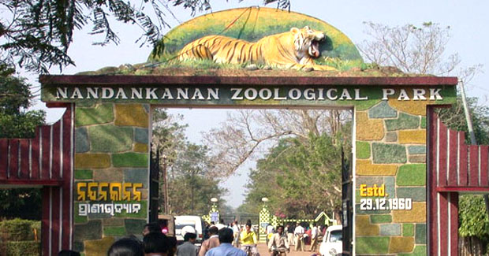

|

|
The genesis of the Odisha State Museum goes back to the year l932, when two notable Historians, Prof. N.C. Banerjee and Prof. Ghanshyam Dash of Ravenshaw College, Cuttack started collection of archaeological treasures from various places. The small Museum was then housed within the premises of the College. In l938, by a suitable order, the Government of Odisha transformed this nucleus into the Provincial Museum of Odisha and appointed Committee of Management consisting of the Principal, the Head of the Department of History and three other Professors of the College.
Maintaining close contact with the general public and the Archaeological Department of the Government of India and other States, the Museum continued to grow. In order to popularize the cultural exhibits of the Museum, leaflets printed both in Odia and English were published in the Samaj and the New Odisha and copies of the same were sent to officials and the public to create a sense of awareness about the significance of the Museum. As a result of this publicity, students and the general public started visiting the Museum in large numbers. The teachers of the History Department made sustained efforts to explain to them the cultural value of the Museum and its exhibits.
|